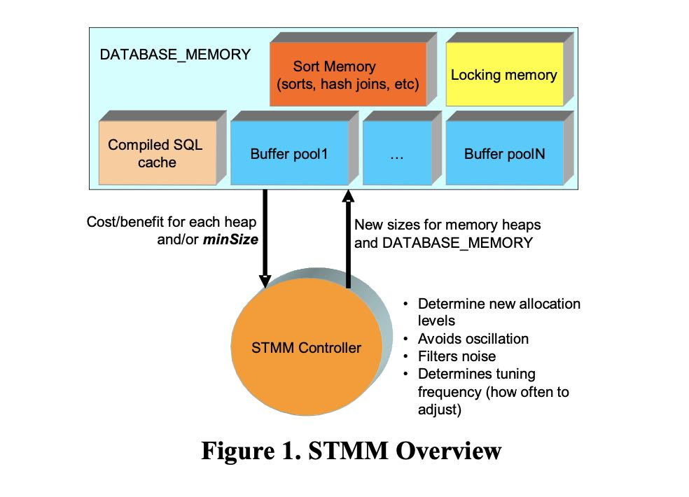
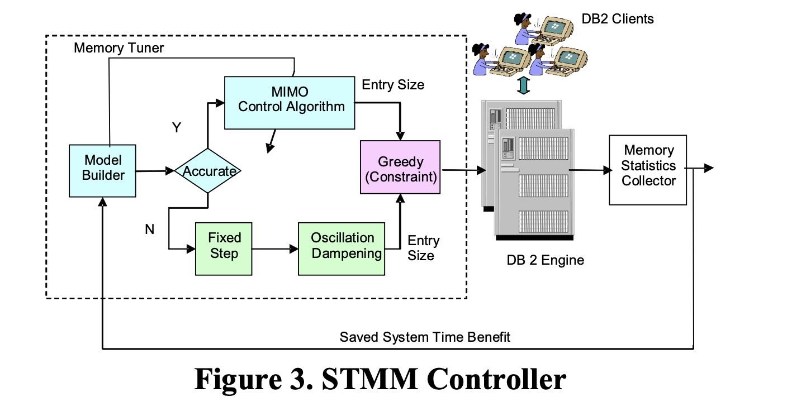

Adaptive self-tuning memory in DB2
Table of Contents
https://www.vldb.org/conf/2006/p1081-storm.pdf
这篇文章主要是讲DB2如何来为各个组件(sort,join,buffer cache等)调整内存总量的，来确保性能可以达到最优，这篇文章没有讨论说应该在一个query内给每个operators分配多少内存什么的。
2006年的VLDB，这篇文章技术用于DB2 V9.1 这个是2006年发行的。最新版本的DB2是11.5(2021.9)。
1. abstract
STMM(self-tunning memory manager)
- cost-benefit analyais. 基于代价收益分析（增大memory可以节省多少运行时间）
- runtime simulation modeling. 这些数据是通过模拟过程来得到的
- control theory. 根据这些数据进行建模，然后提供内存调整的反馈
设计上偏向数据建模的东西稍微多些，所以看的有点走马观花，主要就是看看工程上的架构。
DB2 for Linux, UNIX, and Windows Version 9.1 introduces the Self-Tuning Memory Manager (STMM), which provides adaptive self tuning of both database memory heaps and cumulative database memory allocation. This technology provides state-of- the-art memory tuning combining control theory, runtime simulation modeling, cost-benefit analysis, and operating system resource analysis. In particular, the novel use of cost-benefit analysis and control theory techniques makes STMM a breakthrough technology in database memory management. The cost-benefit analysis allows STMM to tune memory between radically different memory consumers such as compiled statement cache, sort, and buffer pools.
2. design overview
The principal component of the Self-Tuning Memory Manager feature is the memory controller. During each tuning cycle, the memory controller (or memory tuner) evaluates the memory distribution and determines if system performance can be enhanced through the redistribution of the database memory. To do this, the controller uses cost-benefit data as input into a control model whose output is an improved memory distribution. The control model also determines an appropriate tuning frequency, typically between 30 seconds and 10 minutes, based on the workload characteristics (as defined through the input cost-benefit data).

cost-benefit数值是通过模拟来收集的：假设在Y MB的基础上，增加X MB的内存，那么可以T sec运行时间的节省。有了这些数值之后，就可以开始每个内存组件的建模： \(X=A(1-e^{-bu})\) 其中X表示节省的运行时间，U表示增加的内存大小。
STMM Controller结构如下,下面由两个模型组成：
- MIMO Controller 这个是按照模型做的调整算法，里面也用了某种积分控制算法什么的保证调整平滑。
- Oscillation Dampening. 这个是没有数据模型之前的某种按照fixed step调整的算法，但是要避免震荡。

文章后面大部分都是将怎么进行建模的：
- 如何构建模型和检查模型有效性
- 确定多长时间重新建模一次
- 确定如何在各个组件之间做memory transfer.